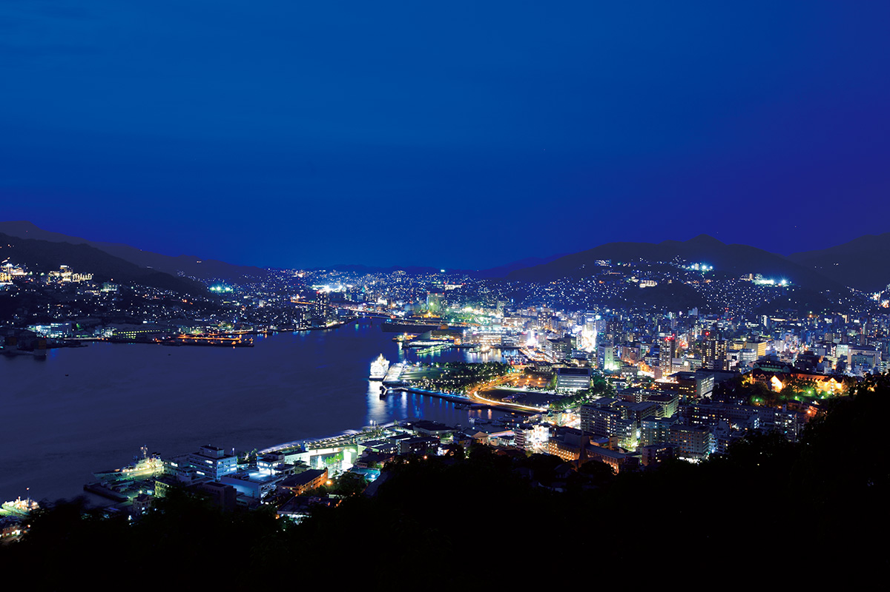
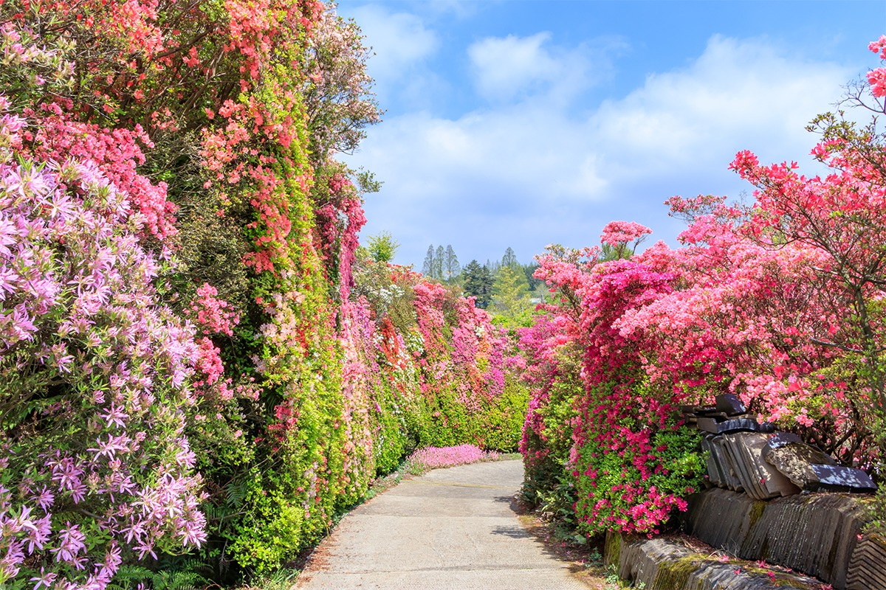
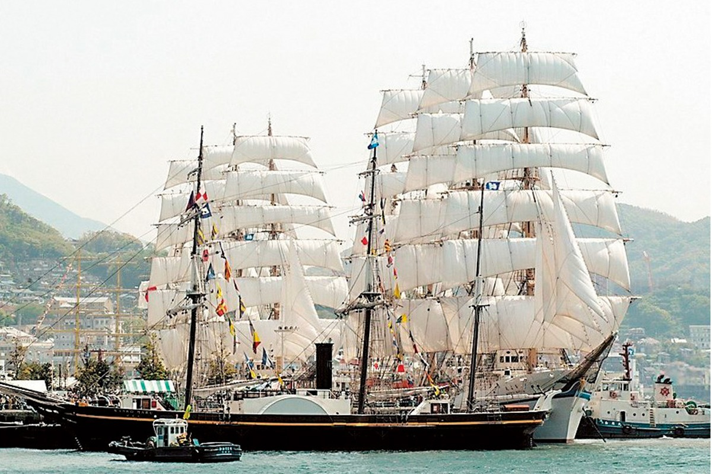
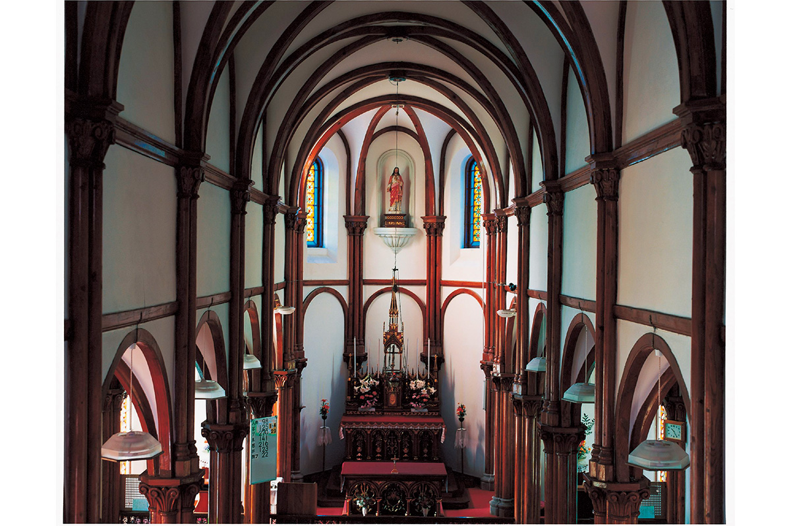
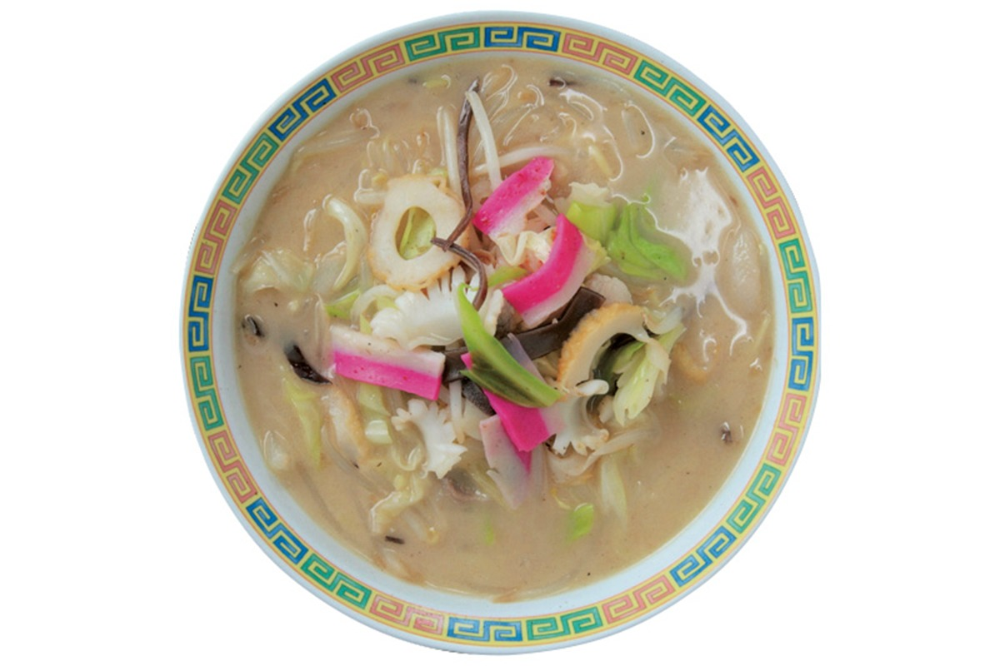
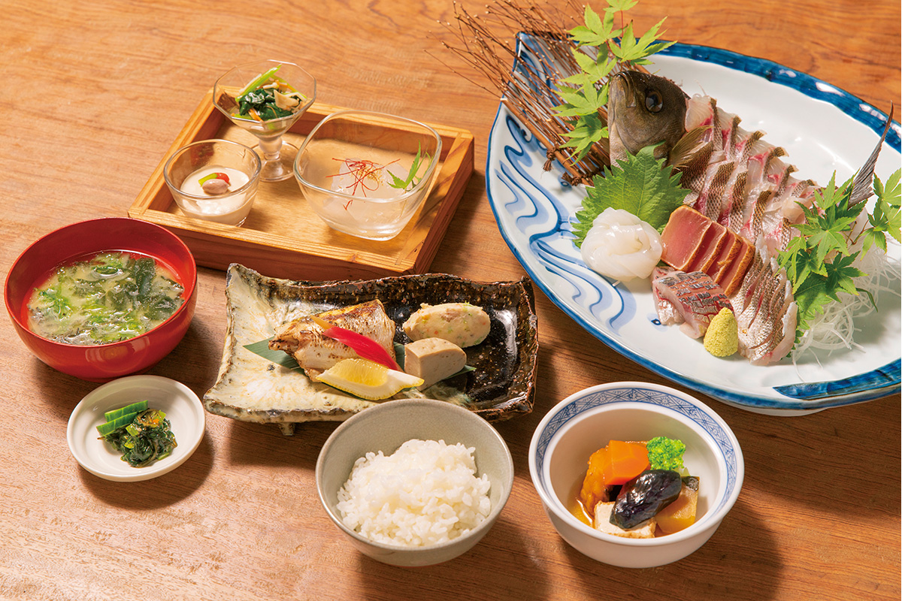
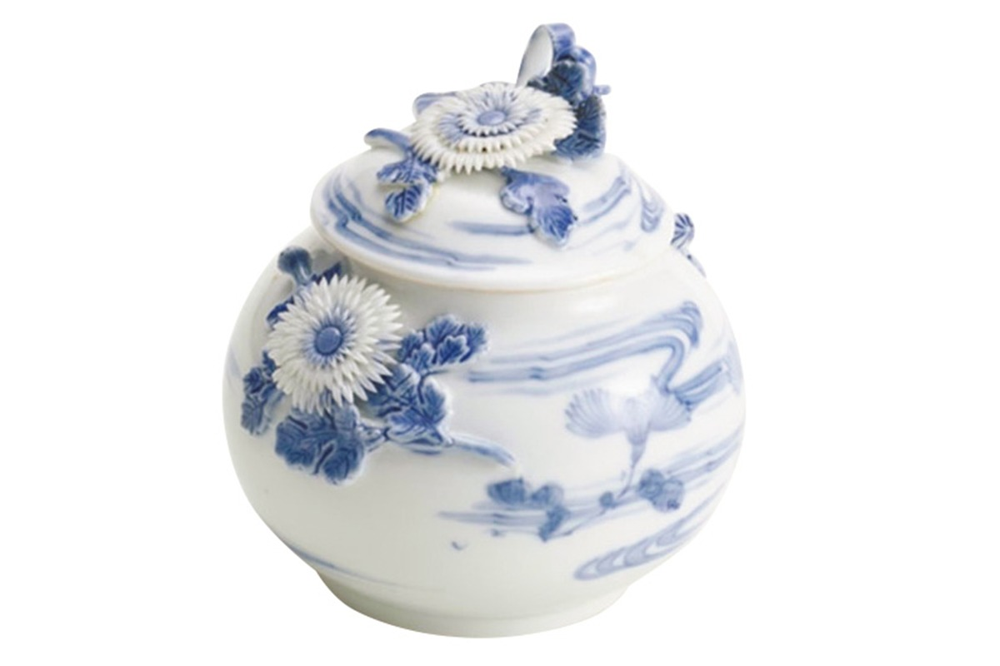
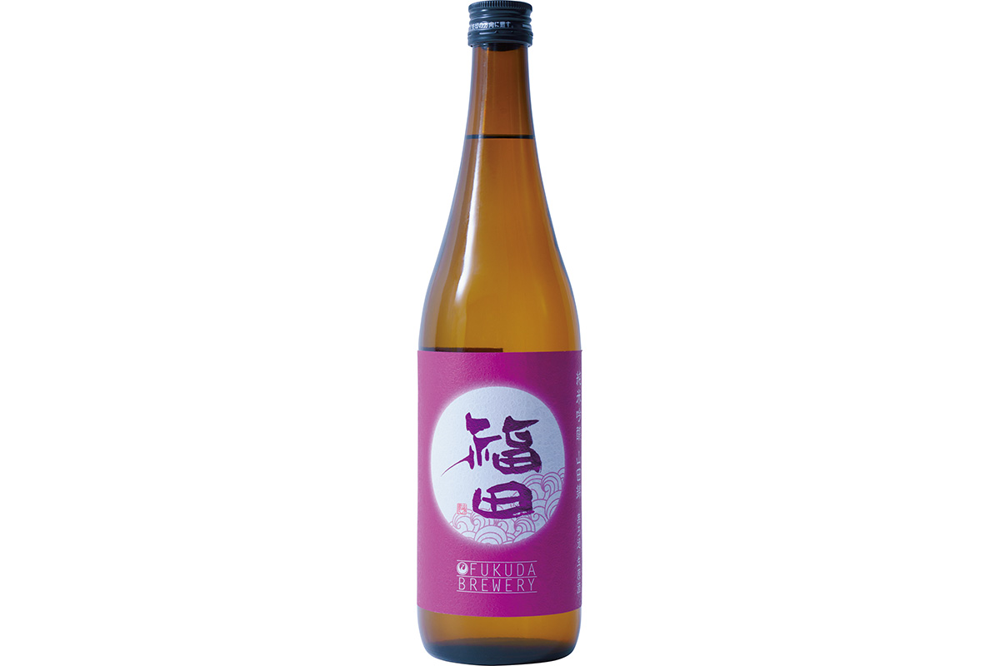
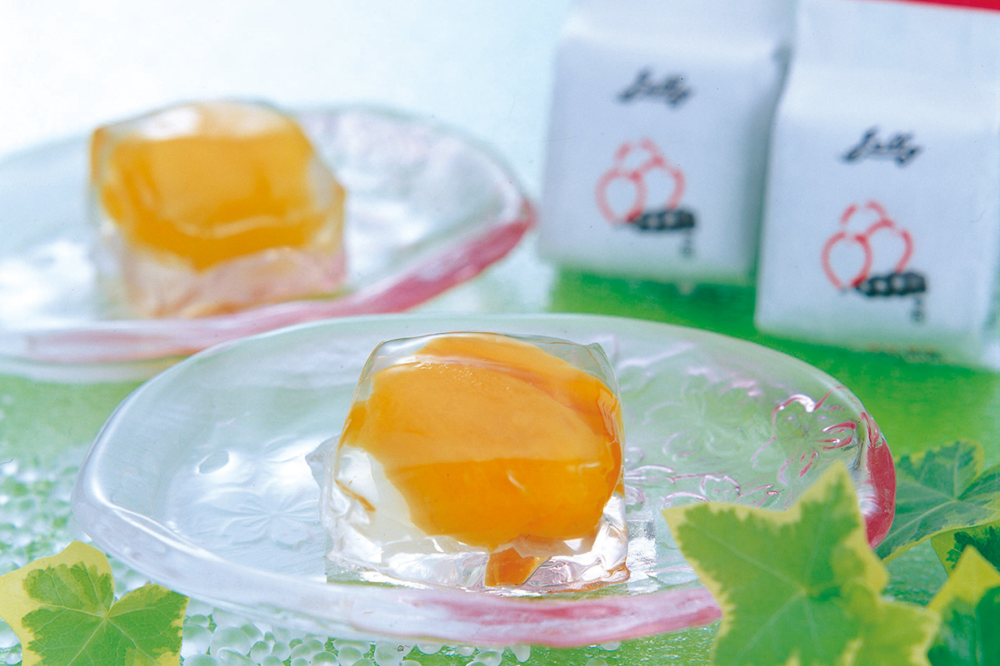
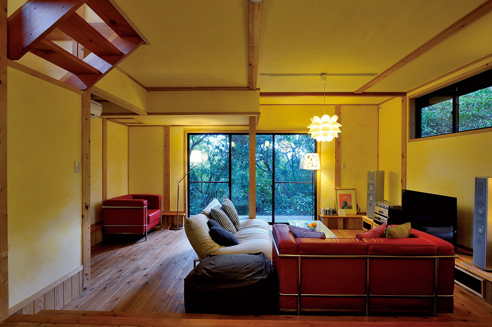

Префектура Нагасаки
Нагасаки: шесть сотен островов, окно в Европу и лапша из портовой кухни

Ночной город лежит в чаше холмов, огни домов спускаются к воде залива.
Единственное место, через которое Япония столетиями смотрела на Запад: четыре полуострова, шесть сотен островов и город, поднимающийся по склонам вокруг бухты. Разбираем, за чем ехать в Нагасаки: от храма на острове Гото до чашки с видом на ночной порт.
О префектуре
Четыре полуострова и шестьсот островов
Префектура лежит на самом западе Кюсю и состоит из четырёх полуостровов, Нагасаки, Симабара, Китамацуура и Нисисоноги, а также из островов Цусима, Ики и Гото вместе с множеством малых. Островная часть занимает около сорока пяти процентов площади, а число островов доходит примерно до шестисот, и по этому показателю префектура первая в стране.
С древности здесь был вход для связи с внешним миром: торговля и обмен шли с Китаем, Кореей, Португалией, Англией и Голландией, и из этого выросла своя культура с отчётливо чужими чертами, повлиявшая на всю Японию. Когда страна закрылась, искусственный остров Дэдзима в Нагасаки остался единственным местом, открытым для Запада, и через него шла связь мира с Японией.
После открытия страны в эпоху Мэйдзи выросло судостроение, и порт Нагасаки стал его центром. Вместе с ним поднялись и другие отрасли, и промышленность тех лет во многом определила модернизацию страны, а её памятники сегодня входят во всемирное наследие.
Что посмотреть
Дорога в цветущих кустах
Азалии у подножия горы
На склонах вокруг города проложены дорожки, и в мае кусты азалии образуют над ними сплошную стену высотой в человека. Розовые коридоры уходят вверх по холму, и здесь же открываются виды на бухту.

Что ещё посмотреть
- Смотровая площадка Набэкамбури-яма, вид на город с высоты 169 метров
- Пики Надзюсима на смотровой площадке Тэнкайхо, сто восемь островов в заливе
- Национальный парк Ундзэн-Амакуса, горы и источники в центре префектуры
- Сад Главер, дома иностранных торговцев на склоне
Праздники
Мачты над портовой стенкой
Праздник парусников в Нагасаки
Праздник проводят каждый год в конце апреля. Под весенним ветром в порт входят красивые парусные суда из Японии и из-за границы и встают у стенки, а вместе с ними идут пробные выходы в море и завершающий фейерверк.

- Период
- ежегодно в конце апреля
- Место
- порт Нагасаки, парк у воды и район Дэдзима-уорф
Другие праздники
- Кунти в Нагасаки, шествие с драконом и лодками по улицам
- Фестиваль Ёсакои в Сасэбо, танцы с барабанами на проспекте
- Праздник порта Нагасаки, концерты и огни у воды
Музеи и архитектура
Кирпичный храм на острове Гото
Церковь Оосо
Первую церковь поставили в 1879 году, а в 1916 году она получила нынешние кирпичные стены. Колокольню с восьмиугольным куполом считают символом посёлка, и это заметный памятник католической истории островов.

- Адрес
- 2151-2 Aokata-go, Shinkamigoto, Minamimatsuura, Nagasaki
- Часы
- 9:00-17:00, возможны закрытые дни
Что ещё посмотреть
- Музей истории и культуры Нагасаки, история порта и его связей
- Художественный музей префектуры Нагасаки, живопись и графика региона
- Старая церковь Гарю, деревянный храм на островах
Местная кухня
Лапша, придуманная для студентов
Тямпон по-нагасакски
Блюдо придумал первый хозяин китайского ресторана, который работает в городе до сих пор, для китайских студентов, приехавших учиться в Японию. В плотном бульоне лежат капуста, ростки, свинина и розовая камабоко, потому порция получается очень сытной.

Что ещё попробовать
- Кухня тёбу-рёри, китайский стол на общем блюде
- Турко-райс, рис с мясом и пастой на одной тарелке
- Густой суп с моти, суп с моти на бульоне из рыбы
Где поесть
Дом, который построили на китовой торговле
Старый дом Фудзимацу
Дом семьи Фудзимацу, разбогатевшей на китобойном промысле и изготовлении сакэ на островах Одзика, переделали в ресторан, сохранив дух старинной усадьбы. Внутри участка есть собственный причал, с которого открывается вид на остров Нодзаки.

- Адрес
- 3694 Maegata-go, Ojika, Kitamatsuura, Nagasaki
- Телефон
- +81 959-56-2646
- Часы
- 11:00-15:00, 18:00-22:00
- Выходные
- вторник
Ремёсла
Фарфор, который звали «Хирадо»
Фарфор Микаваути мастерской Хирадо Сёдзан
Мастерская развивалась как придворная печь дома Хирадо и росла на торговле с южными европейцами, потому её работы вывозили как товар, и в Европе их знали под именем города.

- Телефон
- +81 956-30-7734
Что привезти
Сакэ и желе из сливы
Сакэ Фукуда дзюнмай гиндзё
Винокурня делает нефильтрованное сырое сакэ из риса ямада-нисики. У напитка спокойный аромат гиндзё и чистая мягкая сладость.

- Телефон
- +81 950-27-1111
- Сайт
- fukuda-shuzo.com
Желе из сливы Моги
Сливу моги из этих мест закрывают в желе, и получается летняя сладость с плотной мякотью внутри. Её покупают как местный подарок в жаркий сезон.

- Телефон
- +81 120-49-1052
- Сайт
- biwajelly.co.jp
Где остановиться
Четыре комнаты у западного берега
Оберж Акадама
Гостиница стоит на острове Осима у западного края префектуры, вокруг природа без построек. Для французской кухни рыбу берут прямо у местных рыбаков.

- Адрес
- 1383-4 Terashima, Oshima, Saikai, Nagasaki
- Телефон
- +81 959-34-2003
- Комнат
- 4
- Цена
- от 20 000 иен за ночь с двумя приёмами пищи на человека, без налогов и сборов
Местный диалект
Как здесь говорят «очень вкусно»
- умака ёочень вкусно
- ойдэ нахамассэдобро пожаловать
- нон-но какрасиво, приятно на вид
- баттэноднако, но
- ядзэкахлопотно, надоедливо
Рекорды
В чём Нагасаки первая
- №1 вылов ставриды адзи
- №1 сбор сливы бива
- №1 число отдалённых островов
Вопросы и ответы
Что ещё спрашивают о Нагасаки
Как называется местное блюдо, где несколько европейских кушаний лежат на одной тарелке?
Турко-рейс. Его началом считают кофейни в префектуре: на тарелку кладут плов, пасту и свиную котлету, а само блюдо в шутку называют обедом для взрослых из детского набора.
Какая необычная привычка есть в части районов при посещении могил?
Фейерверк. Поминовение на О-бон начинается после заката: с фонарями, где стоит родовой знак, родня сидит у могил, пьёт сакэ и вспоминает ушедших, а дети запускают фейерверки.
Справочник
Нагасаки в цифрах
Общие сведения
| Административный центр | Нагасаки |
| Муниципалитеты | 13 городов, 8 посёлков |
| Площадь | 4131 кв. км |
| Население | 1,34 млн человек |
| Плотность населения | 324,6 человека на кв. км |
| Туристов в год | 35,5 млн |
| Дерево префектуры | кипарисовик и камелия |
| Цветок префектуры | азалия ундзэн |
| Птица префектуры | мандаринка |
Климат
| Средняя температура | +17,7 |
| Максимум | +33,6 |
| Минимум | +2,5 |
| Осадки | 1821 мм |
| Ясных дней | 31 |
| Дождливых дней | 107 |
| Снежных дней | 21 |
Для путешественника
| Онсэнов | 32 |
| Гостиниц и рёканов | 857 |
| Музеев искусств | 9 |
| Музеев | 77 |
| Митиноэки, придорожных станций | 11 |
| Национальное сокровище | собор Оура и главный зал храма Суфуку-дзи |
| Важных культурных ценностей | 58, из них 3 национальных сокровища |
| Исторических мест | 30 |
| Живописных мест | 5 |
| Природных памятников | 35 |
| Всемирное наследие | объекты промышленной революции Мэйдзи, наследие скрытых христиан Нагасаки и Амакусы |
| Национальные парки | Сайкай, Ундзэн-Амакуса, Гэнкай и ещё один |
Природные памятники
- Цусимский кот, дикая кошка острова Цусима
- Остров Адзика, остров с редкой растительностью
- Кедр у перевала Хитацуги, старое дерево у дороги
- Сталактитовая пещера Нанацугама, пещерные залы с натёками